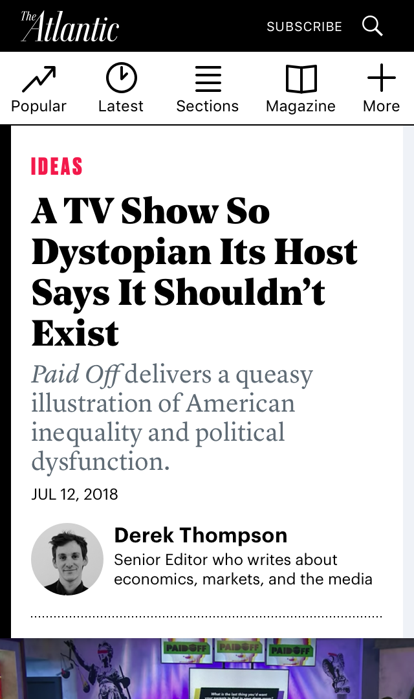
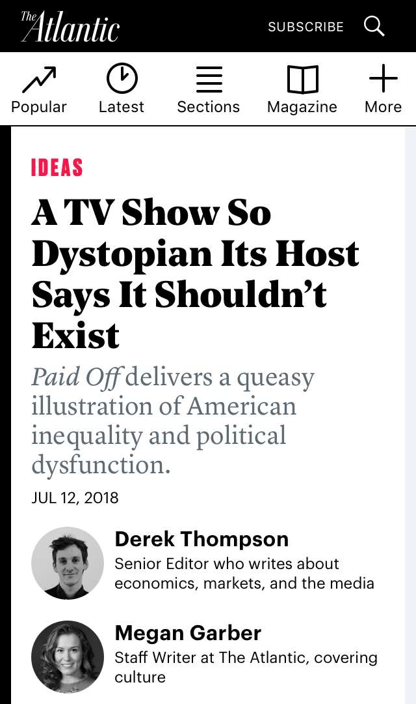
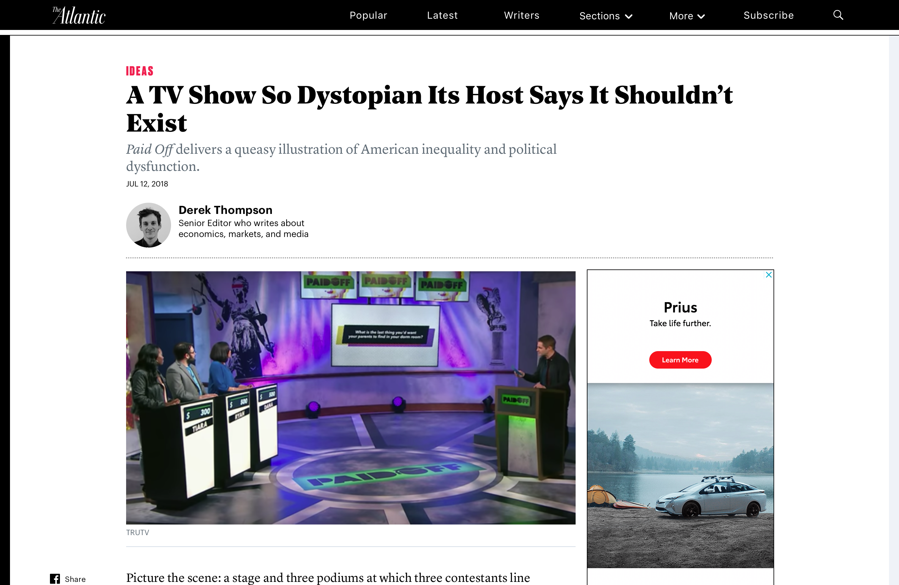

|
Ideas Section 
In collaboration with Chris Sullivan, I designed the reading experience for Ideas, The Atlantic's new section of opinion and analysis-driven pieces. The Problem We needed to define what Ideas as a section would mean to readers and writers and convey it in an elegant, seamless reading experience that fit with The Atlantic's brand and spirit. Initial Research
Goals
Wireframes I created different author byline treatments to sit on our article pages.  User Testing We conducted two types of user tests:

Final Designs

Single byline

Double byline
 Desktop byline |
is a product designer with experience in UX/UI, front-end, and graphic design. Her passions lie in emerging tech + design for social impact and delight.
Currently a product design fellow at The Atlantic.
Read more..